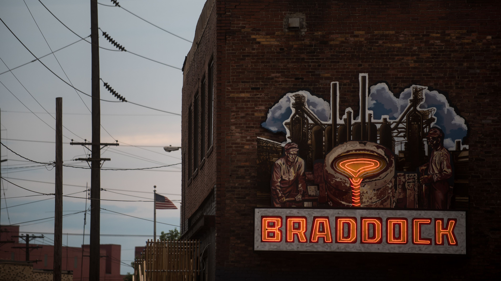

Introduction
This proposal addresses issues of food security and provision in Braddock and North Braddock, and provides spaces for gathering and sharing meals, by retrofitting the former Superior Motors restaurant into a new Community Canteen.
"Why would you build an upscale restaurant in a community that people cannot afford? That was all kind of wrong."
- Lou Berry
Work by Linyue Luo
This proposal addresses issues of food security and provision in Braddock and North Braddock, and provides spaces for gathering and sharing meals, by retrofitting the former Superior Motors restaurant into a new Community Canteen.

The project adapts most of the original Superior Motors interior plan, which includes the kitchen and sitting areas. It makes the kitchen space more open and offers greater functionality and flexibility. On regular days, residents can come to the canteen for meals and to gather. The space is also a culinary school, which could provide opportunities for residents to learn cooking skills. Residents could even bring their materials and cook freely here, or they could order meals with lower prices. Meanwhile, there are also some office spaces and other rooms in the Canteen which members of the community could reserve for meetings or other gatherings.
On special occasions, the canteen would host community activities, in partnership with the Community Oven. A large outdoor space, which is currently a parking lot and open space, is attached to the Community Canteen. Here we propose an edible garden along with a Garden Resource Center, managed by Grow Pittsburgh. All the food grown in the garden could be used in the Canteen, and also sold to residents at low prices. Residents who need tools, fertilizers, or other materials to start or maintain their own gardens could visit the Garden Resource Center and get assistance. Moreover, in the proposal, the old Orchard has now returned back to the community. People could come here to enjoy leisure time with their families and friends. Finally we propose, in the future, that the Canteen also has a mobile food pantry which would supply food and products directly to residents who may not be able to access the Canteen.